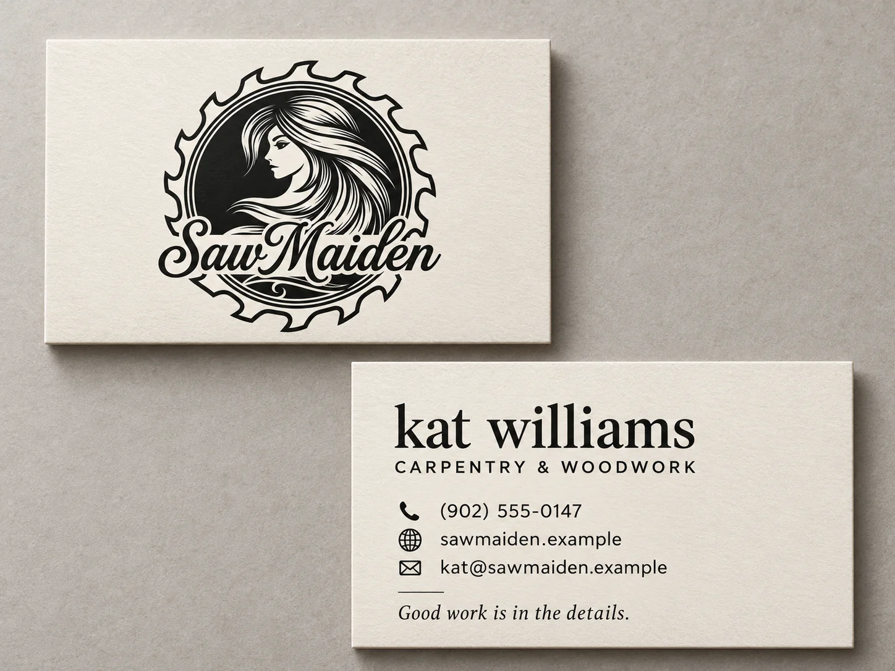
01Ink & Ivory
Classic editorial
Original-inspired emblem, with quiet serif typography and a craftsmanship line.
Take a closer lookBusiness cards / kat williams
A considered collection for SawMaiden. Explore the colours, the details, and the character of each card.
01–05 stay close to the original logo.
06–10 explore subtle refinements.
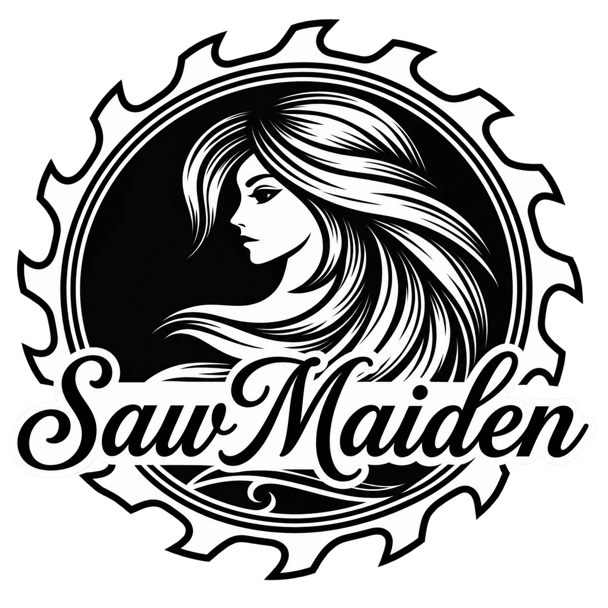
The collection
Each concept shows the front and back.
Select a card to see the details.

01Classic editorial
Original-inspired emblem, with quiet serif typography and a craftsmanship line.
Take a closer look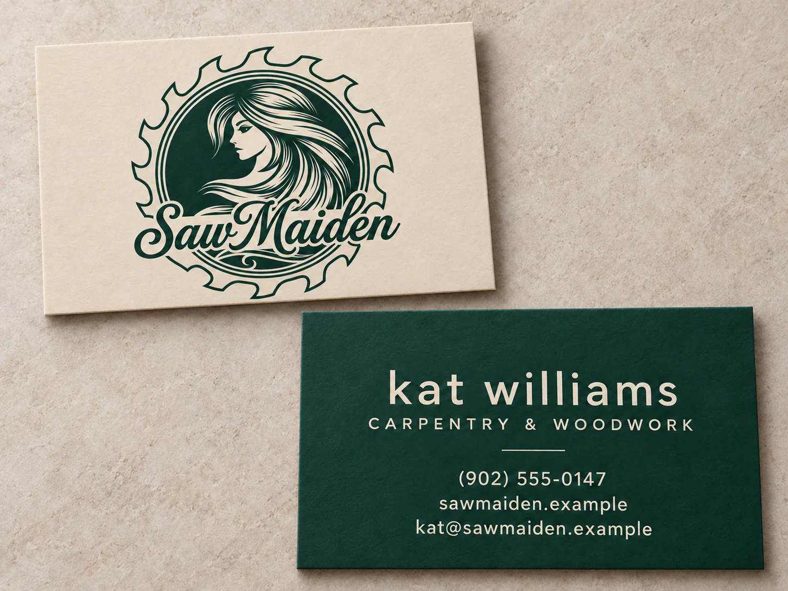
02Natural and confident
Original-inspired emblem, with rich evergreen and a clean, airy contact side.
Take a closer look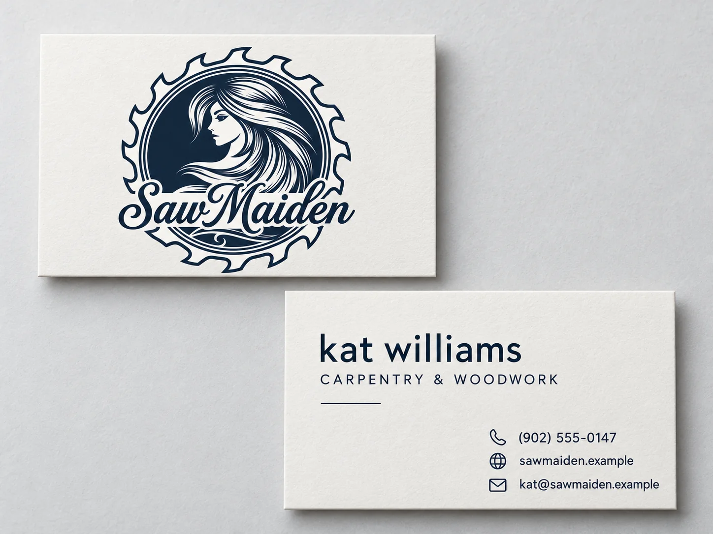
03Architectural restraint
Original-inspired emblem, with crisp navy and a disciplined typographic layout.
Take a closer look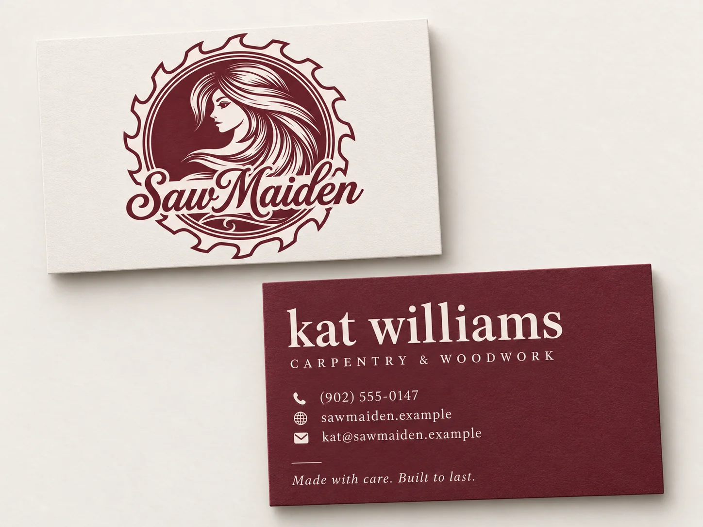
04Boutique craft studio
Original-inspired emblem, with deep burgundy, soft porcelain and a short craft line.
Take a closer look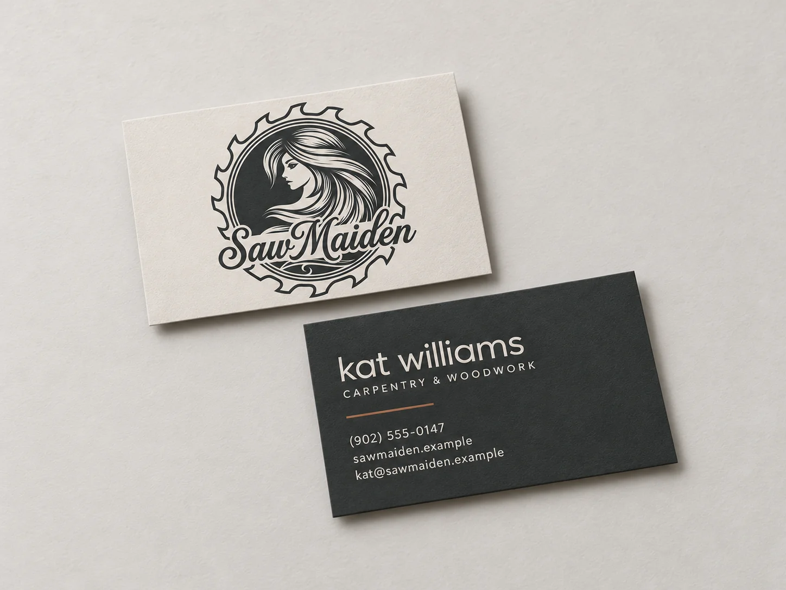
05Contemporary workshop
Original-inspired emblem, with matte graphite and one restrained copper accent.
Take a closer look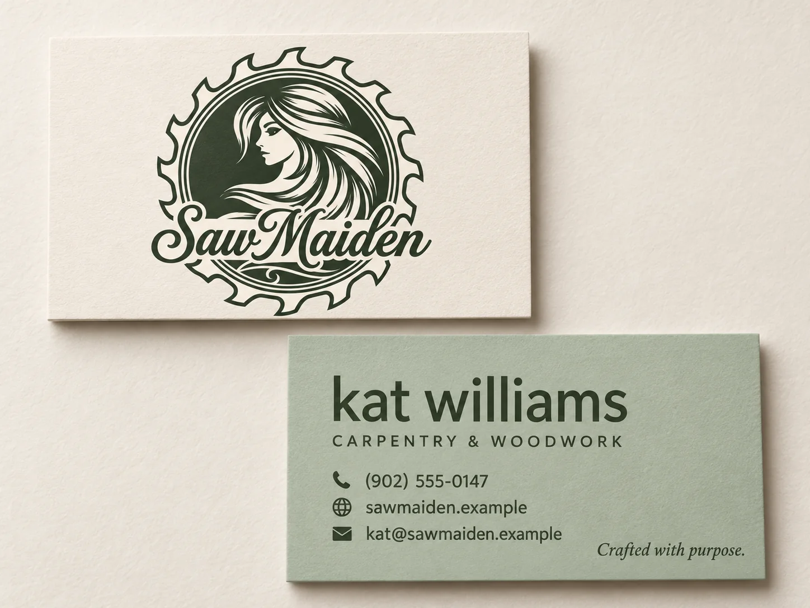
06Soft modern craft
Logo exploration: simplify the finest hair strokes while retaining the profile and silhouette.
Take a closer look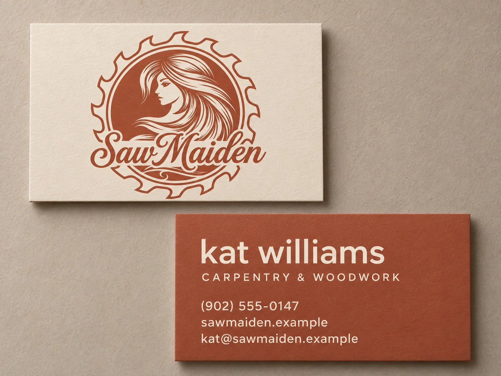
07Warm and grounded
Logo exploration: reduce the concentric border detail while preserving the central emblem.
Take a closer look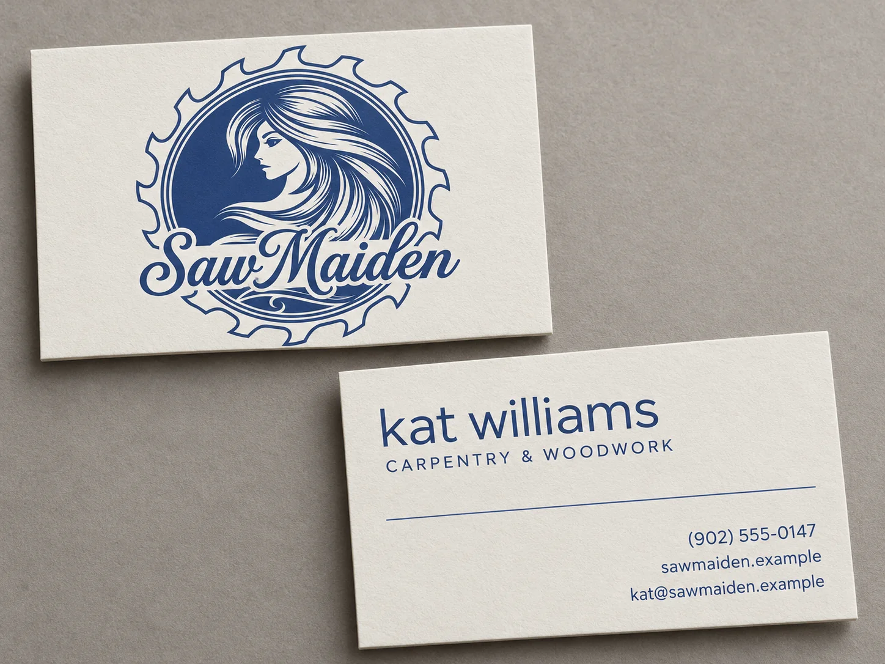
08Confident minimalism
Logo exploration: lighten and regularize the saw-tooth outline.
Take a closer look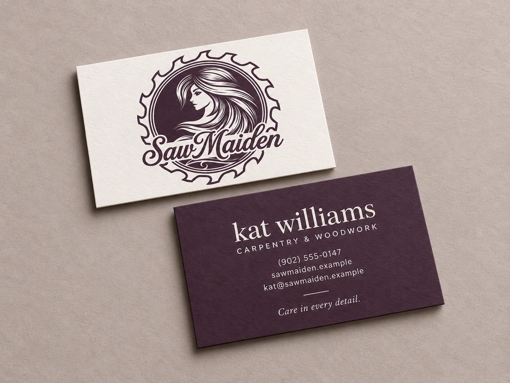
09Understated editorial
Logo exploration: subtly refine the script spacing while keeping its original character.
Take a closer look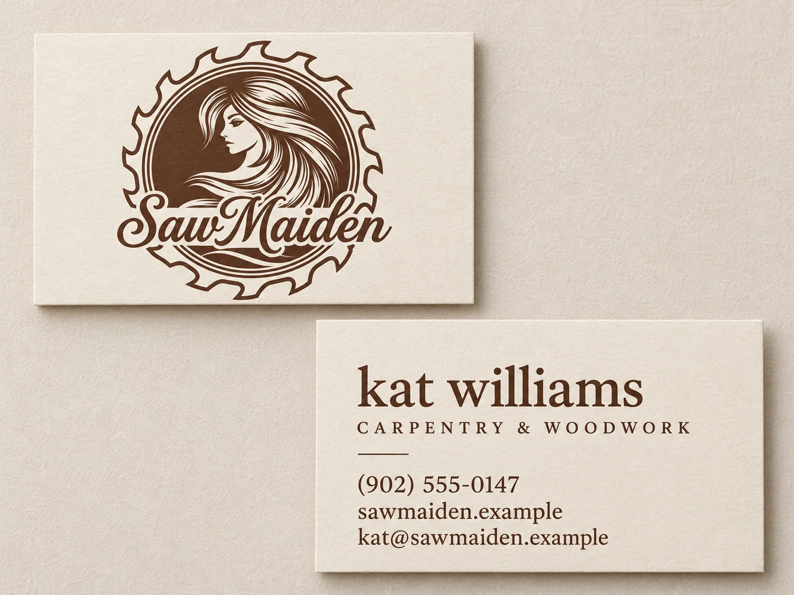
10Warm heritage
Logo exploration: shorten the lower flourish while preserving the main script wordmark.
Take a closer lookKeep the collection
Take the complete lookbook with you, or save the original logo for the next step.
All ten front-and-back concepts, with colour palettes and a short note on each direction.
Download the PDF10 pages 33.5 MB
Open PDF in a new tabThe cropped logo with a transparent background, in original PNG and compact, lossless WebP formats.
Download both logo filesTransparent PNG + WebP ZIP